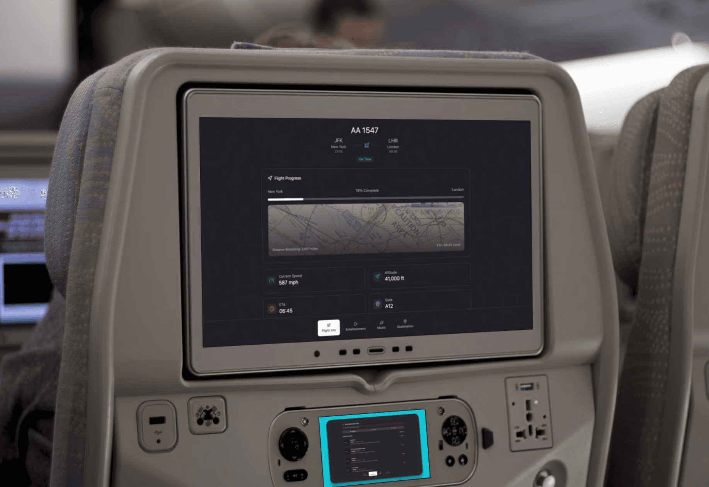
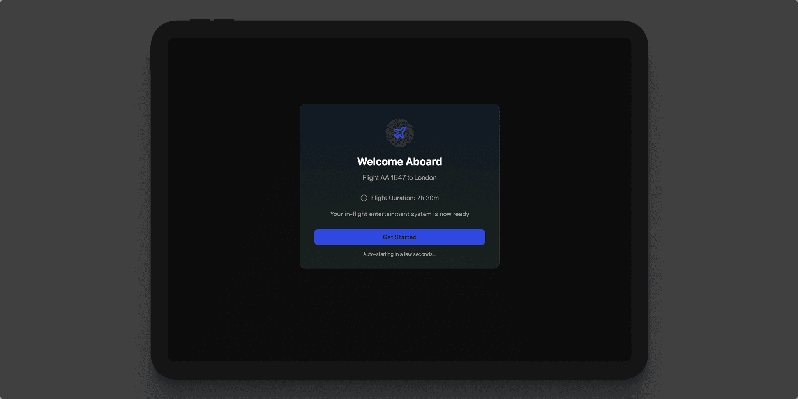
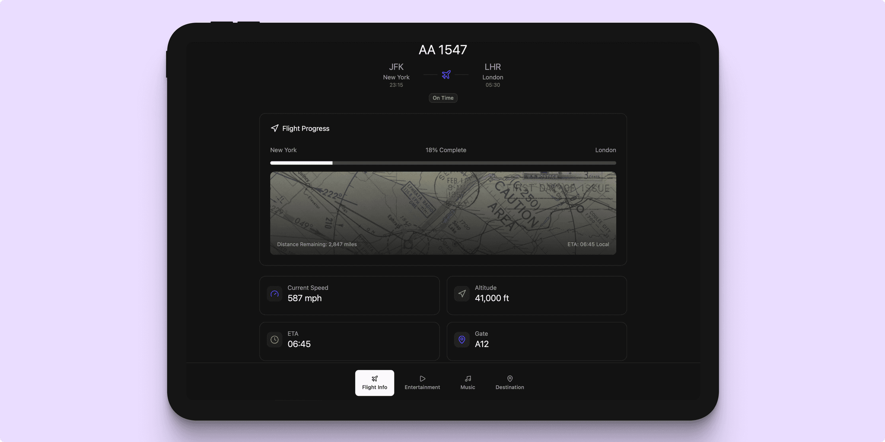
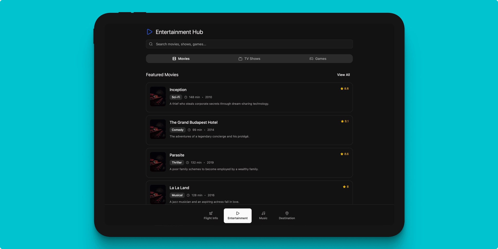
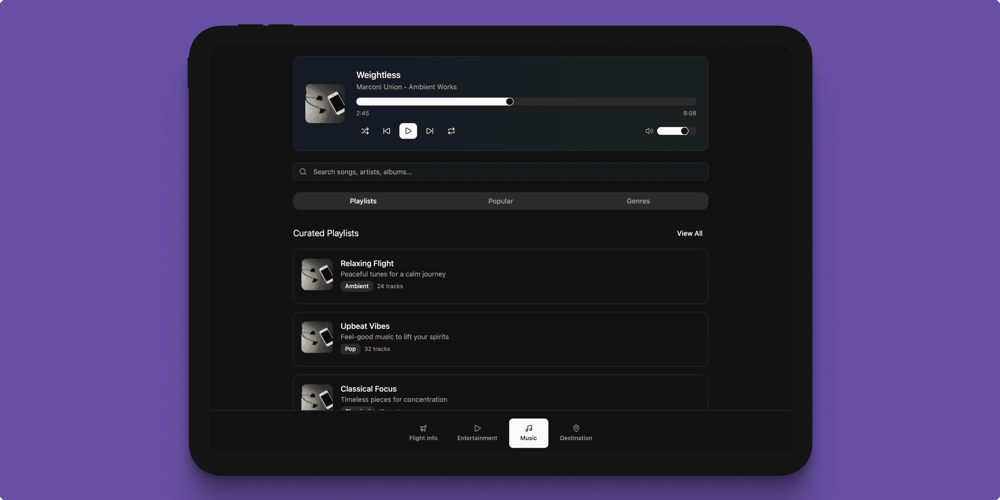
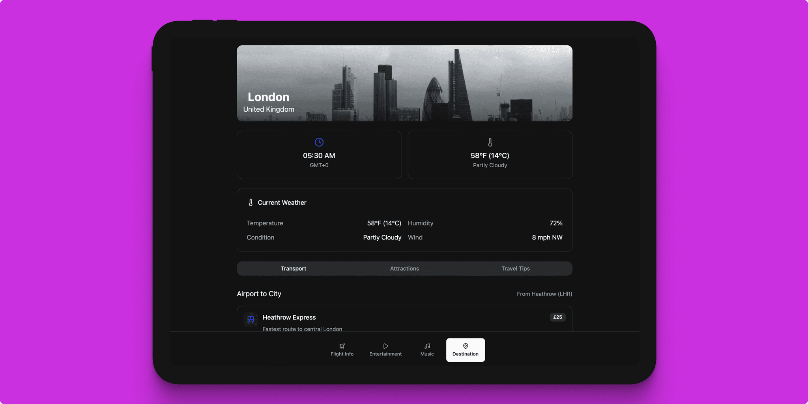

This case study explores the design and development of a dark mode in-flight infotainment system (IFE) tailored for flight cabin monitors. The system is an infotainment hub delivering real-time flight information, diverse media and music content, and detailed arrival location information. The UI is crafted to offer an intuitive, visually comfortable, and accessible experience suitable for low-light aircraft cabin environments, enhancing passenger comfort and engagement during flights.





User Personas
Emma, 32 – Leisure Traveler:
Emma flies frequently for vacations and leisure. She values an engaging media library to watch movies and listen to music. She prefers using dark mode in low light to reduce eye strain and wants the interface to be intuitive with personalized content suggestions.
Raj, 45 – Business Traveler:
Raj travels for work with tight schedules. His priority is quick access to accurate flight details and local time information. He appreciates a clean, distraction-free interface that allows him to monitor flight progress efficiently without getting overwhelmed.
Mia, 19 – First-Time Flyer:
Mia is anxious about flying for the first time. She needs clear, simple visualizations of flight progress and step-by-step arrival info. Guided onboarding or tooltips help her understand how to navigate the infotainment system to alleviate anxiety.
Problem Statements
- Existing inflight entertainment systems often lack a true dark mode, causing discomfort and eye strain in dimly lit cabins.
- Navigation between flight data, entertainment, and arrival info can be convoluted and unintuitive, especially for new users.
- Many systems have limited personalization, leading to reduced content engagement.
- Accessibility features are often minimal or absent, locking out passengers with visual, motor, or cognitive impairments.
- Passengers new to flying find it difficult to comprehend flight progress and system navigation without clear onboarding.
Goals and Objectives
- Deliver a comfortable, visually appealing dark mode UI optimized for airplane cabin lighting.
- Ensure highly intuitive user flow for seamless switching between flight info, entertainment, music, and destination details.
- Incorporate personalized media recommendations based on passenger preferences.
- Provide clear, real-time flight updates with engaging visualizations.
- Ensure full accessibility compliance: legible fonts, proper contrast, ease of interaction, and assistive technology support.
- Simplify onboarding for inexperienced users with tutorial hints and clear labeling.
User Flow
- Welcome Screen & Onboarding:
Passengers are greeted upon boarding with a personalized welcome and an optional brief tutorial to familiarize them with system navigation. - Persistent Navigation Bar:
A bottom or side navigation allows one-tap access to main sections: Flight Information, Media, Music, Arrival Info, and Settings. - Flight Information:
Displays real-time data such as altitude, speed, time to arrival, and distance remaining. An interactive flight path map visualizes the journey, including local times and weather updates at origin and destination, gate info, and flight announcements. - Media Section:
Passengers browse movies, TV shows, and documentaries by genre or personalized recommendations through swipeable cards and search features. - Music Section:
Includes playlists, genres, albums, podcasts, and radio stations with user-friendly audio controls optimized for touch interaction. - Arrival Location Details:
Provides destination weather, local time, transportation options, tourist attractions, and safety advisories to help passengers prepare for arrival. - In-Flight Notifications:
Subtle, non-intrusive alerts keep passengers informed of flight updates or cabin announcements without disrupting current activities.
Design Details
- Palette: Uses soft dark gray backgrounds (#121212 instead of pure black to prevent eye strain, with light gray text at varied opacity for visual hierarchy and in-dark visibility.
- Accent Colors: Desaturated blues, teals, and purples highlight interactive elements, icons, and controls.
- Typography: Clean sans-serif fonts with ample size and spacing ensure readability and comfort.
- Iconography: Simple, consistent icons complement the dark theme and aid in intuitive navigation.
- Touch Targets: Large tap areas (minimum 48x48 dp) for usability on touch-enabled cabin screens.
- Animations: Minimal, smooth transitions enhance experience without distracting.
- Layout: Generous negative space avoids clutter and enhances focus.
- Accessibility: High contrast ratios, adjustable text sizes, screen reader compatibility, and visible focus indicators ensure inclusivity.
Competitive Analysis
Several leading airline IFE systems informed the design approach:
- Emirates ICE system offers a rich media library and intuitive flight mapping but lacks an optimized dark mode, making night usage uncomfortable.
- Delta Studio excels in mobile integration and content depth but features a complex navigation hierarchy challenging for casual users.
- Lufthansa FlyNet provides reliable flight data and connectivity but offers limited entertainment content and lacks UI optimization for low-light use.
- Panasonic eX3 presents high-quality displays but does not fully address accessibility or provide consistent dark mode support.
- Air France RAVE delivers clear flight visuals and multilingual support yet suffers from a busy interface with dense text, which can overwhelm passengers.
This system synthesizes the strengths and remedies the weaknesses of these platforms by delivering a clean, accessible, and engaging dark mode UI tailored for flight cabin monitors.
Accessibility Considerations
- All text and UI components maintain contrast ratios of at least 4.5:1 to comply with WCAG AA guidelines in dark mode.
- Base font sizes of at least 16px with options for resizing accommodate visual impairments.
- Interactive elements respect minimum sizing guidelines for touch.
- The interface is compatible with aircraft-embedded screen readers, with clear labeling and logical navigation structure.
- Focus indicators ensure visibility for keyboard and d-pad navigation methods.
- Color choices avoid problematic contrasts for colorblind users, using shapes and text to complement color cues.
- Motion sensitivities are addressed by offering reduced or disabled animations for susceptible passengers.
- Multilingual support covers wide passenger demographics without sacrificing accessibility.
- Onboarding assists first-time or less tech-savvy users with contextual tips and simple language.
Impact and Insights
Adoption of this dark mode IFE system significantly enhances passenger comfort during night flights by reducing glare and eye fatigue. Intuitive navigation and clear visual hierarchy lowered cognitive load, boosting passenger engagement with entertainment and informational content. Personalization features increased media consumption and satisfaction. Onboarding aids alleviated first-timers' anxiety, fostering a positive flying experience. Accessibility optimizations ensured inclusivity across diverse passenger needs, aligning with global aviation standards and modern user expectations.
For future adding a light/dark switcher would be optimal for day and night usage.